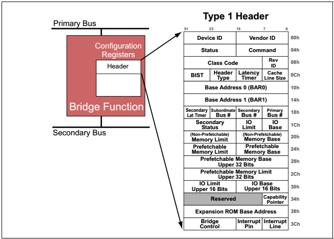
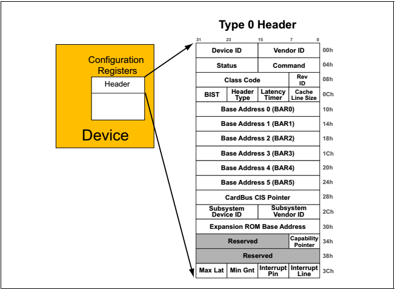
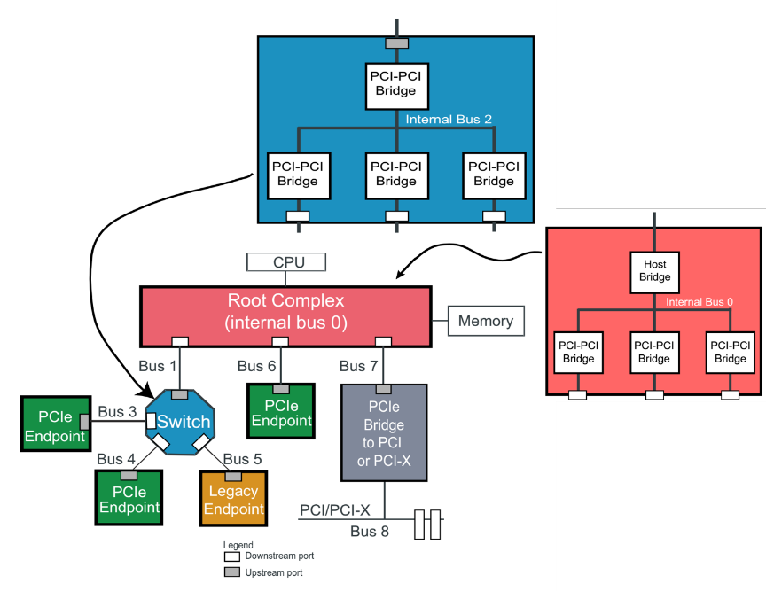
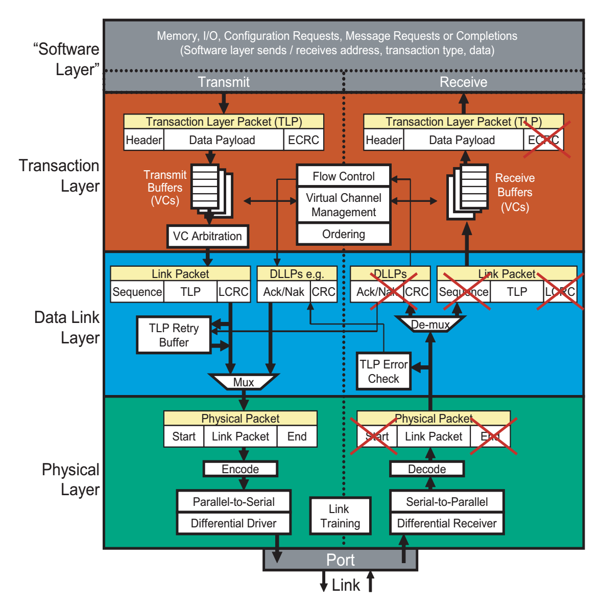
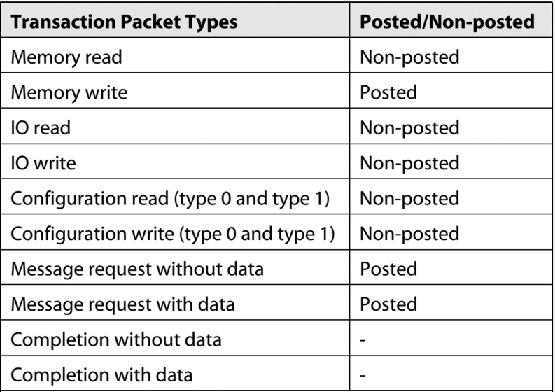
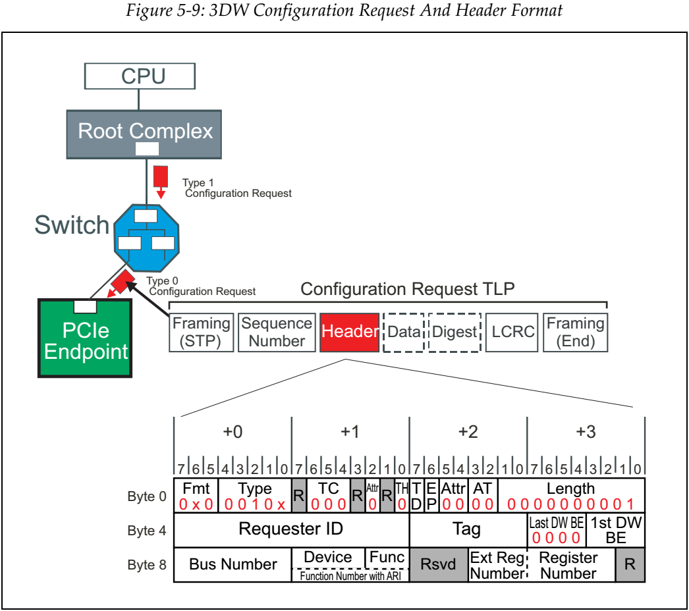
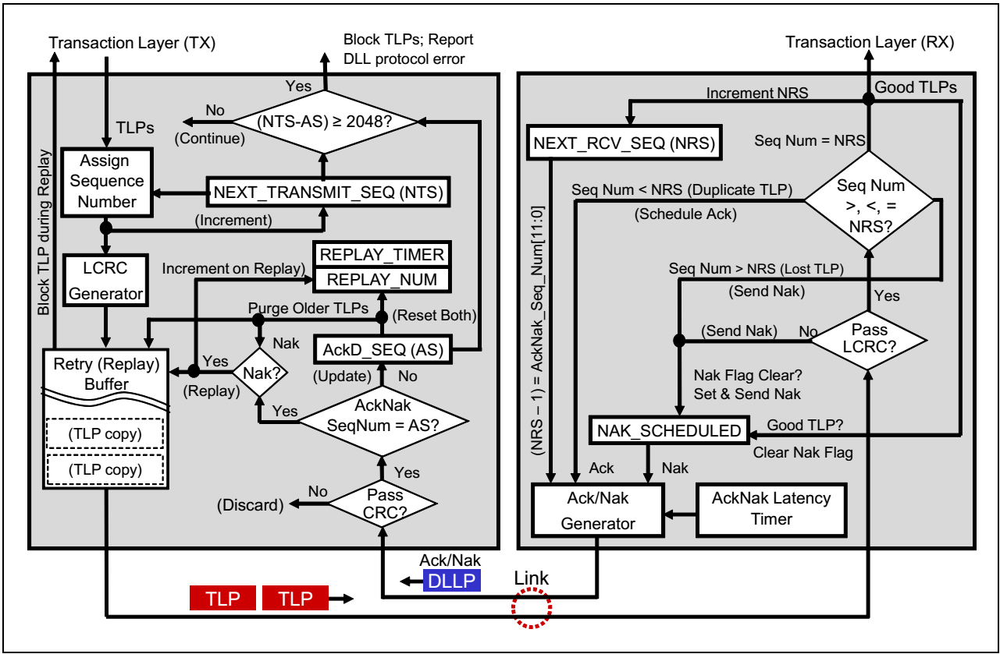
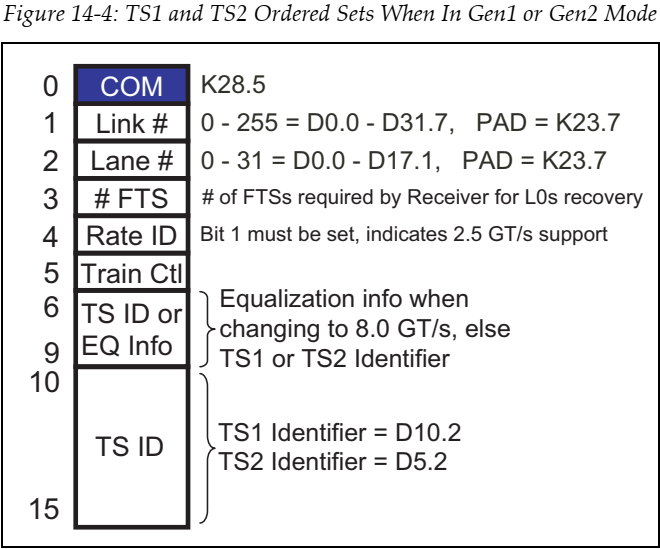

PCI: PCI-Express introduction¶
This document introduces PCIe types and topology, PCIe system architecture, PCIe interrupts mechanism and PCIe Enumeration and resource assignment.
1. PCIe Device Type And Topology¶
1.1 PCI bus device components¶
Host bridge
PCI bridge
PCI device
1.2 PCIe bus device components¶
Root Complex (RC)
PCIe Switch
Endpoint(EP)
1.3 PCI device header type¶
Type 1 for PCI bridge¶
Type 0 for PCI device¶
1.4 A typical PCIe bus topology with the internal logic of RC and PCIe Switch¶

RC
Host Brid
Root port ( Type 1 header )
PCIe Switch
1 Upstream port ( Type 1 header )
N Downstream ports ( Type 1 header )
PCIe Endpoint
Upstream port ( Type 0 header )
2. PCIe system architecture¶
Protocol Layers overview is as the following

Transaction Layer
TLP: End-to-End
Flow Control
QoS
Ordering
Data Link Layer
DLLP: Point-to-Point
Link Power management
TLP error correction
Physical Layer
Ordered Set: Link training and initializatio
2.1 Transaction Layer¶
Transaction Packet
Memory Space access
IO Space access
Configuration Space access
Message
nSplit Transaction:
Non-posted and Completio
- 
TLP Header Format¶

Configuration Request
Memory Request
IO Request
Completion
Message
TLP Routing¶
There are 3 TLP routing methods
ID Routin
ID routing is based on the BDF fields of TLPs.
BDF ‐ Bus Number, Device Number, Function Number
Address Routing
Address routing is based on the target address of TLPs
Implicit Routing
Message routing is determined using the r[2:0] sub-field of the Type field
2.2 Data link layer¶
2.3 Physical Layer¶
Physical packet
Link training and initialization
Logic sub-layer
Byte striping/un-striping
Scrambling/Descrambling
Encoding/Decoding
Serializing/Deserializing
2.3.1 Ordered sets¶
TS1 and TS2 Ordered Set (TS1OS/TS2OS)
Link initialization and training
Electrical Idle Ordered Set (EIOS)
Transmitter: lower‐power link state sends this before ceasing transmission.
FTS Ordered Set (FTSOS)
Transmitter: Send N_FTS to take Link back to L0 from L0s
SKP Ordered Set (SOS)
Transmitted at regular intervals: Clock Tolerance Compensation
Electrical Idle Exit Ordered Set (EIEOS)
Exit the electrical idle Link state.
Start of Data Stream Ordered Set (SDSOS)
Indicate the following blocks is data stream.
Added in Gen3
2.3.2 Link training and initialization¶
Detect
Presence of a receiver
Polling
Bit Lock
Symbol Lock/ Block Alignment
Polarity Inversion
Configuration
Determine Link width
Assign Lane numbers
Lane reversal
Lane‐to‐Lane De-skew
L0
Fully‐active state
Recovery
Re-training: L0 error, L1/L0s back to L0, speed change
Bit Lock
Symbol Lock/ Block Alignment
Equalization if support Gen3 or later Generation